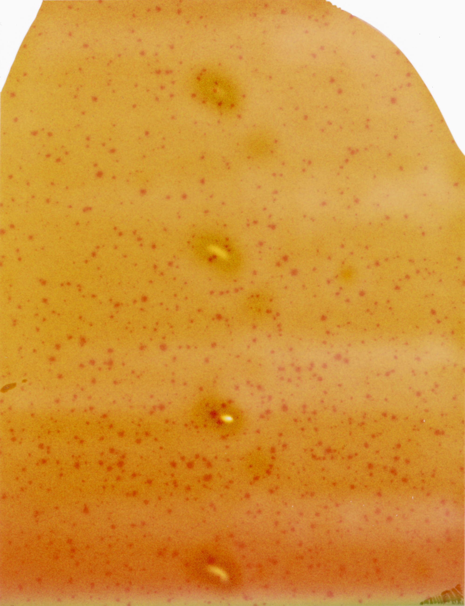

Form (2019) is a photographic exercise that relies on failure to become successful. It is also a reflection on the potential of transforming, and the limits of a photographic material. These images were shot on expired instant film. The images, originally 3"x4" were scanned and enlarged to highlight the unexpected content that emerged from them. 101-Studio, 2019. 45,7"x35", Inkjet Print 409-Untitled, 2019. 45,7"x35", Inkjet Print501-Red, 2019. 30"x24", Inkjet Print. This image was finalist for the Photo Prize Fundació Vila Casas 2020. 502-Green, 2019. 30"x24", Inkjet Print 503-Blue, 2019. 30"x24", Inkjet Print 103-Studio, 2019. 20"x15", Inkjet Print 208-Gallery, 2019. 20"x15", Inkjet Print 310-Barcelona, 2019. 20"x15", Inkjet Print102-Studio, 2019. 30"x24", Inkjet Print Untitled Art Fair, Miami. Hesse Flatow, 2019